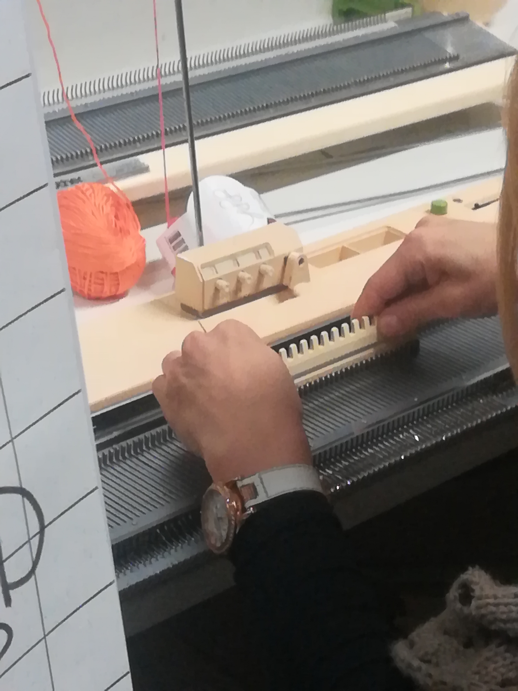
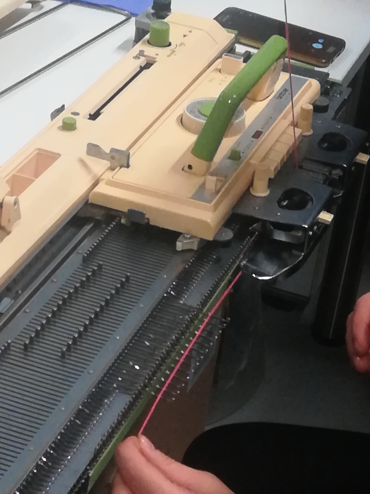
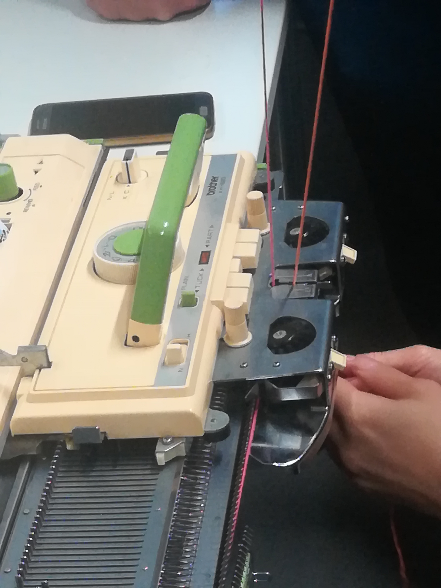

Knitting and Sewing
In this session knitting and sewing techniques were introduced to us.
How to use the knitting machine and how you can implement a sensor or an electronic part in the textiles. This was shown directly by letting one of the students to do it by herself which she mastered very quickly.


